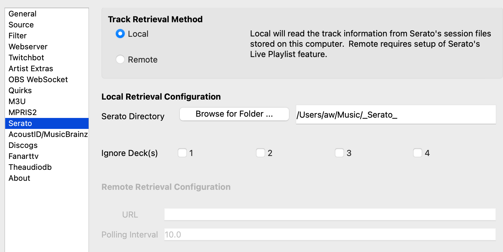
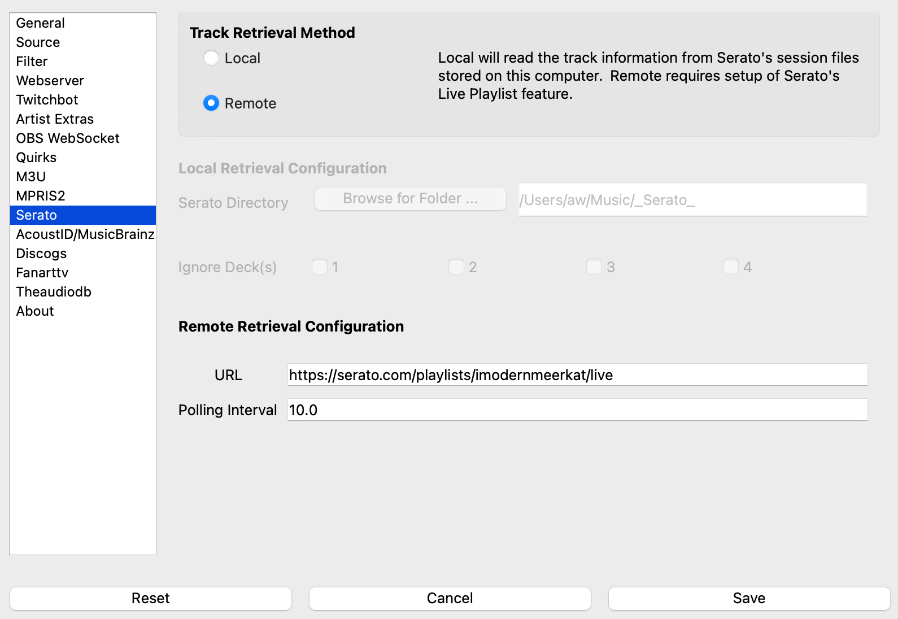

Serato¶
Serato is a commercial software package that runs on Mac OS X and Windows. What’s Now Playing has two modes with which it may use Serato as an input: Local and Remote.
In Local mode, What’s Now Playing will read the local session data on your computer directly. This mode has much more data available to use but requires What’s Now Playing to run on the DJ computer.
In Remote mode, What’s Now Playing will read Serato Live Playlists over the Internet. This mode allows for What’s Now Playing to run on a different computer than the DJ computer, but does not have as much data available.
Instructions¶
Open Settings from the What’s Now Playing icon
Select Input Source from the left-hand column

Select the Serato from the list of available input sources.
Select Serato from the left-hand column.
Configure either Local or Remote mode as appropriate (see below)
Click Save
Local Mode¶
{kind=link}
When Local Mode is active, the What’s Now Playing app runs on the same machine as Serato. Configure the Serato Library Path to
Serato’s directory, usually Music/_Serato_. This method is the recommended installation as much more information is available
and significantly improves What’s Now Playing‘s correctness.
Ignore Deck(s) allows for tracks on these deck(s) to be ignored.
Remote Mode¶
{kind=link}
Remote mode is useful when the streaming computer is not the same as the Serato DJ computer by utilizing Serato Live Playlists. It should be only used when What’s Now Playing’s web server mode also cannot be used.
NOTE: This mode does not support Oldest mix mode.
In Serato, make sure you enable Live Playlists and start a new session. From the Serato website:
“To enable the Live Playlists feature, go to the Expansion Pack tab on the Setup screen and check the Enable Live Playlists option. Once enabled, the Start Live Playlist button is now displayed in the History panel. Click this to start and stop your Live Playlist session.”
Once a new playlist session is started, Serato will automatically open your web browser to your Live Playlist. IMPORTANT: You will need to select “Edit Details” on the Live Playlist webpage and change your playlist to “Public”, or else the What’s Now Playing app will not be able to retrieve any song data. The webpage does not need to remain open. So you can close it once you ensure that the playlist has been made public.
Start the What’s Now Playing app. The app can be controlled and configured by accessing the menu from the icon in the Windows system tray or Mac menu bar.
Be aware that as of this writing (2021-03-05), the only information available via Live Playlists is the artist and the title due to limitations in Serato’s offering.